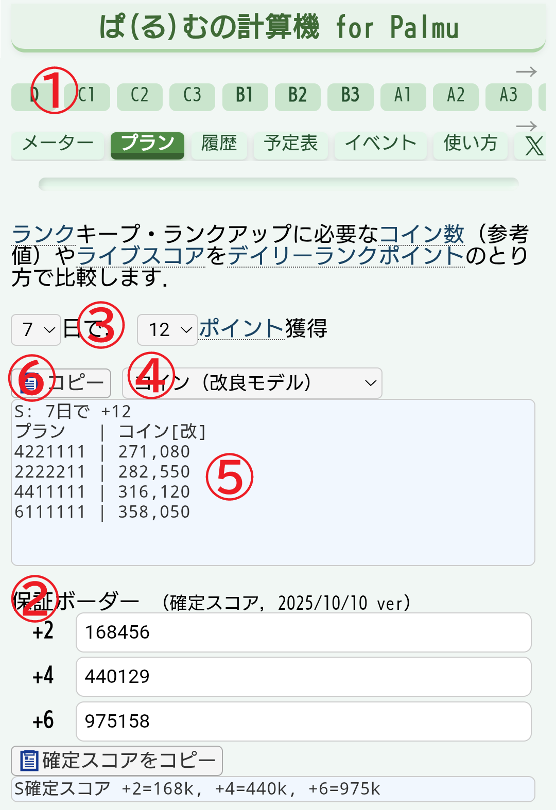

ランクキープ・ランクアップに必要なコイン数（参考値）やライブスコアをデイリーランクポイントのとり方で比較します．
日で，
ポイント獲得
新しい更新期間に入る前のプラン確定にご利用ください．また，保証ボーダーが更新されたときにも，再計算することをおすすめします．

- 最初に一番上のタブから，ランクを選択してください．
- +2/+4/+6 の保証ボーダーが正しいことを確認してください．正しくなければ修正してください．
- 残りの日数と，獲得したいデイリーランクポイント数を選択してください．
- 出力形式を選択してください．
- 結果にプランが表示されます．結果はコイン数（ライブスコア）の少ない順に並んでいます．
- （リスナーなら，「コピー」ボタンを押下して，Palmu のチャットに貼り付けてください．注：7日で18ポイント等では長くなり一度での貼り付けができません．）
ライブスコアからコイン数の算出方法は，２種類あります．どちらの方法でも，コメント数や視聴人数などの影響により若干の誤差が生じます．参考値としてご利用ください．
- 改良モデル[標準]: 調査により得られたデータをもとに，より正確にコイン数を推定します．詳細は，「ライブスコアの算出式について」を参照してください．
- 従来モデル[÷3]: ライブスコアを 3 で割った値をコイン数とします．
B3: 4日で +8 プラン | コイン 6111 | 23,040 4211 | 23,070 2222 | 27,190
B3 ランクの人が，4日で +8 ポイントを獲得するために必要なコイン数を示しています．
プラン 6111 は，+6 を1回獲得し，残りは +1 を3回獲得すれば，目標の +8 が達成でき，それには約 23,040 コインが必要なことを表しています．
この例では，プラン 2222，つまり，4日連続で +2 を獲得するのは，最もコイン効率が悪いということがわかります．6111 と 4211 では同程度なので， +6 を目指して，無理なら 4211 に切り替えるなどの戦略などが考えられます．
リスナーの負担軽減のため，結果として，自身のランク目標を達成し続けるために， 効率の良いプランを選択してください．
注意事項